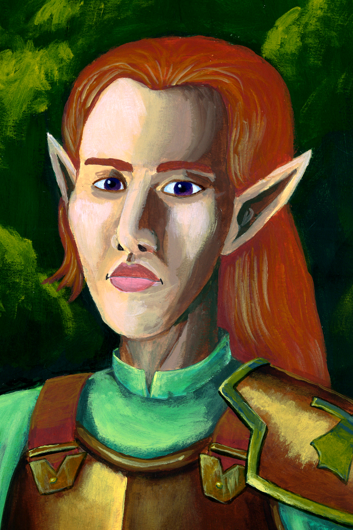

Ash Coldwind
Wood Elf · Ranger 3 · Hunter Conclave · Outlander
"I don't miss. I choose not to fire yet."
15
AC
28
HP
35 ft
Speed
+3
Initiative
+2
Prof. Bonus
14
Passive Perc.
+4
Spell Attack
12
Spell DC
AC = Studded leather (12+3 DEX). Archery fighting style adds +2 to ranged attack rolls (already included in longbow entry below).
12
+1
STR
17
+3
DEX
14
+2
CON
10
+0
INT
14
+2
WIS
8
−1
CHA
Saving Throws
- Strength+3
- Dexterity+5
- Constitution+2
- Intelligence+0
- Wisdom+2
- Charisma−1
Skills
- Animal Handling (WIS)+4
- Athletics (STR)+3
- History (INT)+0
- Insight (WIS)+2
- Nature (INT)+2
- Perception (WIS)+4
- Persuasion (CHA)−1
- Stealth (DEX)+5
- Survival (WIS)+4
Attacks
| Weapon | To Hit | Damage | Notes |
|---|---|---|---|
| Longbow | +7 | 1d8+3 piercing | Range 150/600; +2 from Archery style |
| Shortsword | +5 | 1d6+3 piercing | Melee; finesse |
| Hunter's Mark bonus | — | +1d6 piercing | Once/turn vs marked target |
Colossus Slayer: Once per turn when you hit a creature below its max HP, deal +1d8 piercing. Stacks with Hunter's Mark.
Equipment
- Longbow
- Quiver with 40 arrows
- 2 shortswords
- Studded leather armour
- Explorer's pack
- Staff (walking stick)
- 25 gp
Racial Traits (Wood Elf)
Darkvision 60 ft. Keen Senses: Perception proficiency. Fey Ancestry. Mask of the Wild: can hide in light natural obscurement. Speed 35 ft.
Class Features
Favored Enemy: Humanoids
Advantage on WIS (Survival) checks to track humanoids, and advantage on INT checks to recall information about them. You also learn one language spoken by humanoids.
Natural Explorer: Forest
In forest terrain: double proficiency bonus on INT/WIS checks; difficult terrain doesn't slow travel; can't become lost by nonmagical means; remain alert while foraging; when alone, you move stealthily at normal pace. Always move at full travel pace regardless of party.
Fighting Style: Archery
+2 to attack rolls with ranged weapons. Already included in the longbow's +7 above (DEX+3, prof+2, archery+2).
Colossus SlayerHunter Conclave · 1/turn
Once per turn, when you hit a creature with a weapon attack and the creature is below its hit point maximum, you deal an extra 1d8 damage of the weapon's type.
New player tip: Any damage at all reduces max HP, so this triggers after your first hit in a combat. Combined with Hunter's Mark, your longbow does 1d8+3 + 1d6 (mark) + 1d8 (slayer) = 3d8+1d6+3 on most turns.
Spells
Spellcasting: WIS mod (+2). Spell save DC 12. Spell attack +4. Recover on long rest. Spells known (not prepared): you always have these 3 available.
3
1st level
- 1stHunter's Mark — Bonus action; choose a creature you can see. Deal +1d6 piercing on every hit against it. If it dies before the spell ends, move the mark to a new creature as a bonus action. Concentration, 1 hour. Use this every fight; it's free extra damage.
- 1stCure Wounds — Touch; 1d8+2 HP healed. Your only healing option — save it for emergencies.
- 1stEntangle — STR save DC 12; 20 ft square difficult terrain; creatures that fail are restrained (can retry save each turn). Concentration, 1 min. Excellent area control.
Tip: Opening move: bonus action Hunter's Mark, action longbow attack. Every subsequent hit deals 1d8+3+1d6+1d8(slayer) = up to ~20 damage. Stay at range, use terrain.
Once Per Long Rest · Character Quirk
I Know a Shortcut
You spot something — a game trail, a collapsed wall, a drainage channel, a gap in the hedge — and simply know it leads somewhere useful. In the wilderness, this reduces travel time to the next destination by one third. In a dungeon or building, you identify one hidden structural feature (alternate passage, crawlspace, maintenance shaft, drainage tunnel) that could provide access to an adjacent area. It takes 1 minute of observation. The DM confirms what's actually there — but it's always there.
Personality
Trait
I am quiet and still. I let my actions speak; words feel like wasted arrows.
Ideal
Nature. The natural world matters more than any city, crown, or cause.
Bond
A forest I protected was burned. I track the one responsible, and I am patient.
Flaw
There's no room for caution in a life lived fully. I sometimes act before I think.
Portrait: Joseph Hewitt · CC-BY 4.0